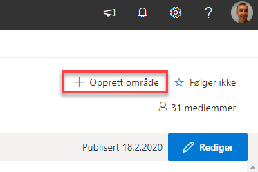
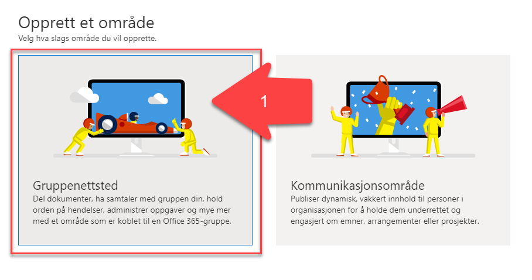
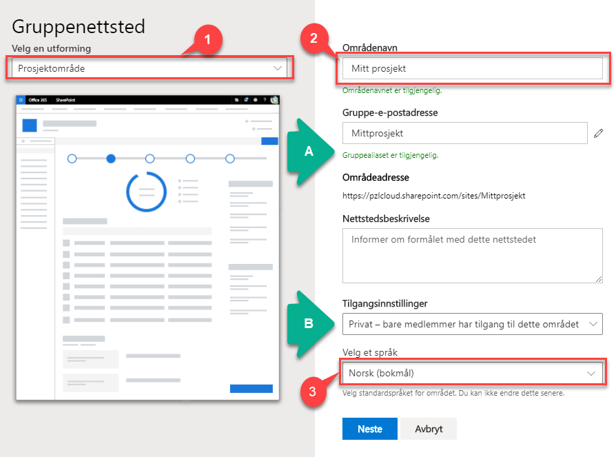
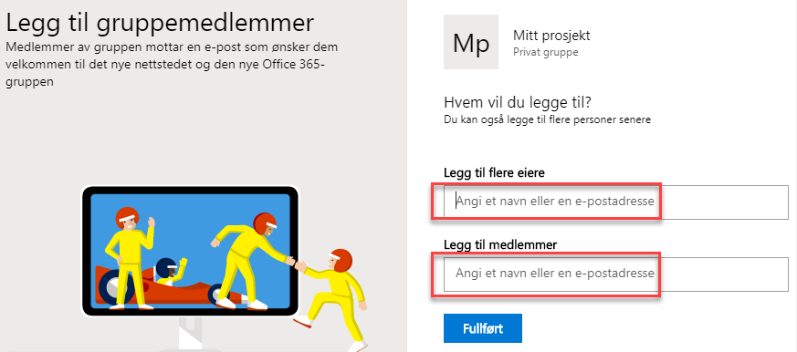
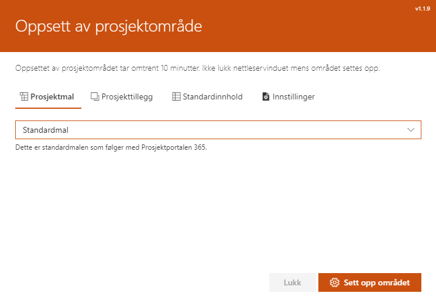
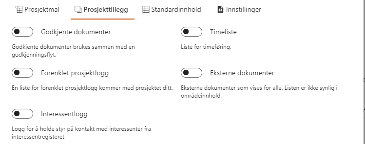
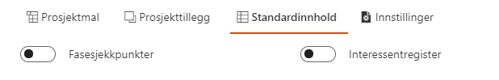
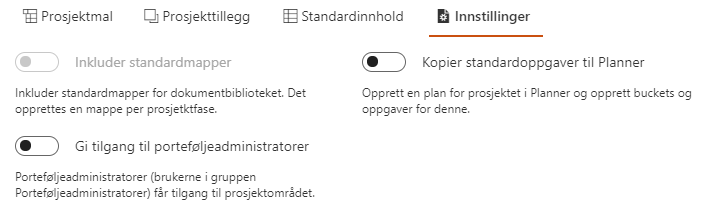

Den som har eiertilgang på porteføljenivået, har også rettighet til å opprette nye prosjekter.
Dette gjøres ved å trykke på Opprett nytt prosjekt-lenken i øvre høyre del på forsiden av Prosjektportalen:

Dette starter en prosess som bør utføres på følgende måte:



Du vil nå bli videresendt til det nye prosjektområdet.
Det første du trenger å gjøre er å sette opp området med ønsket innhold.
Alle muligheter gjøres tilgjengelig på de 4 sidene:
a) Prosjektmal
b) Prosjekttillegg
c) Standardinnhold
d) Innstillinger
Hva som skal ligge tilgjengelig på disse sidene er styrt av porteføljeadministrator. Videre følger en forklaring på hva du kan tilgjengeliggjøre i det nye prosjektet.
Prosjektmal
På denne siden velger du hvilken mal prosjektet skal settes opp etter. Her kan du velge mellom de ulike prosjektmalene som er installert.

Prosjekttillegg
Her velger du hvilke tillegg som du ønsker med i dette
prosjektet.

Standardinnhold
Standardinnhold er faktiske data som man kan legges til i de enkelte lister og biblioteker som finnes på prosjektområdet.

Innstillinger
Med innstillinger kan du velge fra standardinnstillingene som følger med Prosjektportalen. Det er ikke anledning til å legge til egne innstillinger.

6) Etter at alle valg er gjort, velger du «Sett opp området» nederst på siden. Prosjektområdet vil bli fylt opp med innhold og data i henhold til de valgene som er gjort.